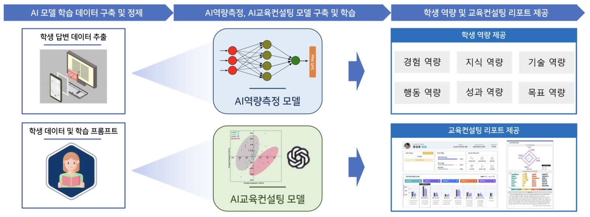

[Completed] 학생 역량측정 및 교육컨설팅을 위한 설명가능한 인공지능 기술 개발
연구책임자 / 2023.06.01 ~ 2023.12.31 / 교육부 (KRW 48 million)
학생 역량측정 및 교육컨설팅을 위한 설명가능한 인공지능 기술 개발 (XAI for student competency measurement & educational consulting)기간: 2023.06. ~ 2023.12.
Funding: LINC 3.0 (KRW 48 million)
본 연구의 목표는 ㈜이엑스디랩스가 개발한 'Xcaliber' 역량평가시스템의 보유 데이터를 기반으로 단시간내에 학생 역량측정이 가능한 AI모델을 개발하는 것입니다. 나아가 해당 AI모델을 활용해 참여기업이 교육컨설팅 사업을 수행할 수 있도록 지원하는 설명가능한 인공지능 기술을 ChatGPT 기반으로 개발하고자 합니다.
English Summary:
The objective of this research is to develop an AI model that enables rapid assessment of student competencies based on the data from the "Xcaliber" competency assessment system developed by EXD Labs. Furthermore, we aim to develop an explainable artificial intelligence technology based on the ChatGPT platform, which utilizes this AI model to support participating companies in conducting educational consulting services.
